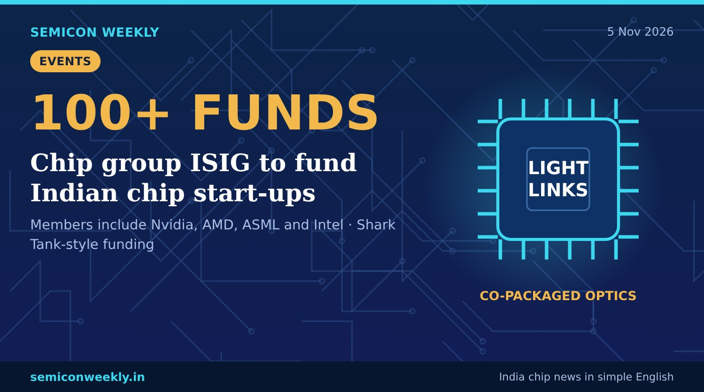

Global chip group ISIG to fund Indian chip start-ups
A global chip industry group wants to connect Indian chip start-ups with more than 100 venture funds.

In short
- ISIG, a global chip industry group whose members include Nvidia, AMD, ASML and Intel, plans to bring investors to fund Indian chip start-ups.
- It has links to more than 100 venture funds and wants to back start-ups on the spot, like the TV show Shark Tank.
- Its CEO said India can move fast in co-packaged optics, a way to send data between chips using light.
Key numbers
100+Venture funds ISIG is linked to
4Big members named: Nvidia, AMD, ASML, Intel
On the spotShark Tank-style funding
What happened
- The International Semiconductor Industry Group (ISIG) plans to mobilise investment for Indian chip start-ups.
- Its members include Nvidia, AMD, ASML and Intel.
- ISIG has links to more than 100 venture funds and wants to fund promising start-ups on the spot, like on Shark Tank.
- Its CEO said India can move quickly in co-packaged optics, which uses light to send data between chips.
Why it matters
Why this is useful
- Chip start-ups need a lot of money before they make their first product.
- Investors who understand chips can help start-ups grow faster.
Why it is good for freshers
- More money for chip start-ups means more early jobs in design and packaging, and new areas like silicon photonics to learn.
- Start-ups often give freshers wider responsibility early on.
- Learn the basics of optical links and high-speed interfaces.
Why it is good for India
- Funding for home-grown chip start-ups helps India build its own chip products.
- New areas like co-packaged optics could become an Indian strength.
Words in this story
- Venture fund: an investor that puts money into young companies for a share of them.
- Co-packaged optics: placing optical (light) parts right next to the chip in one package to move data faster.
- Silicon photonics: using light on silicon chips to send data.